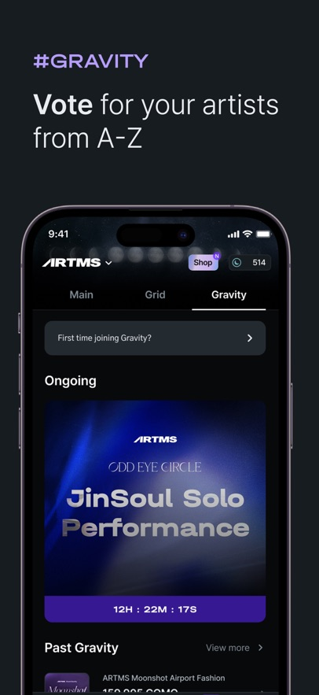

Cosmo 用了快一年：从抽卡玩家到投票参与者的心态变化
从 TripleS 入坑到 ARTMS、idntt 陆续加入，Cosmo 这款粉丝收藏投票应用在十个月里让我经历了从「攒卡」到「攒 COMO」再到「认真投票」的完整转变。
去年三月装 Cosmo 的动机很简单——TripleS 出道不久，群里有人说官方做了个能收藏偶像小卡还能投票的应用，就抱着「反正免费」的心态从官方下载装了。那会儿对它没什么预期，以为就是个粉丝向的抽卡小游戏，点两下新鲜劲过了就会删。没想到十个月过去了，它还躺在我手机主屏的常用文件夹里，每天打开一两次已经成了习惯。

当初为什么装：一句话带过
追 TripleS 是从抖音刷到他们的出道舞台开始的，觉得这团的概念挺有意思——二十四个成员分队活动，主打歌由粉丝投票决定。看到有人说 Cosmo 这款应用的官网上介绍得很清楚，既能拿偶像的数字小卡，还能用这些卡产生的 COMO 去投票，没多想就装了。那会儿就是想体验一下「粉丝决定团队活动」到底是个什么玩法，纯粹是猎奇心态。
越用越顺手：从卡盲到能读出编号的老玩家
刚上手的时候小卡的命名体系让我头大。TripleS 和 ARTMS 用的是 Class 体系，idntt 加入后又换成了 Type，WTO、BTO、ETO、STO、UTO、MTO 六种卡型光看缩写记不住谁是谁。前三个月我基本是瞎点，看到编号就截图问群里的朋友「这张是什么级别的卡」。
慢慢摸出规律是在开始合成之后。Cosmo 的核心玩法其实就是两条线：攒基础卡然后合成进阶卡，进阶卡每月产出更多 COMO，COMO 拿去 Gravity 投票。BTO 是最基础的棚拍卡，每月产 1 个 COMO；STO 是自拍卡，合成整套 BTO 才能拿到，每月产 6 个；UTO 是双人对卡，要合成两名成员的 STO 组合，每月产 12 个。产票能力翻着倍涨，合成路径也就成了明确的目标。
现在我看到一张卡的编号首位就能说出它是什么卡型：1 开头是 WTO 或 BTO，2 是 ETO，3 是 STO，4 是 UTO，5 是 MTO。朋友新拿到一张卡发过来，我扫一眼编号就能告诉她这张值不值得留着合成，哪些编号是缺口，哪些可以转赠换自己需要的。这种从卡盲到能给别人答疑的转变，是我对这款应用「越用越顺手」最直观的感受。
商城购卡的流程也跑熟了。Collect 页右上角那个紫色 Shop 按钮是我进商城的主入口，赛季初会有「指定成员随机编号」和「随机成员指定编号」两种基础卡包，idntt 赛季初还会跟基础卡一起卖动态卡。买的时候同赛季优先这个原则我记死了——跨赛季的卡没法合，分散购买只会拖慢进度。
转赠功能是后来才发现好用的。之前以为小卡只能自己攒，直到群里有人说「缺某个编号可以找人换」才知道 Cosmo 支持按用户 ID 直接发小卡。换了两次卡之后，我成了群里的「中间人」——有人多出某张 STO 问有没有人要，有人缺某个编号凑合成，我帮着对接一下，两边各取所需。最感动的是上次我缺一张 idntt 的 ETO 卡，一个同好直接送了我，说「反正我有两张，拿着凑合成吧」。这种社区氛围是我没预料到的。

越用越烦：当初没发现的问题慢慢暴露
但十个月用下来，也有几处慢慢变成了我的槽点。
最烦的是欢迎卡的规则变过。早期 idntt 用编号 200 开头的活动卡迎接新用户，后来改成了编号 100 起的 WTO。我最早注册的时候拿到的是旧版欢迎卡，后来想合 WTO 路线的时候发现编号体系对不上，问了半天社区才搞清楚是规则变更导致的。这种规则改了但老卡还在体系里、又不给迁移方案的情况，让人有点不舒服。
第二个槽点是转赠的不可撤销。Cosmo 的转赠是真的「发出即易主」，中间没有确认环节。我刚上手的时候输错过一次 ID——对方 ID 里有个下划线我漏打了，卡就这么送给了一个完全陌生的人，追不回。后来每次发之前都要反复核对 ID 和卡编号，变成了一种轻微的操作焦虑。虽然社区总结了三条安全红线（绝不走线下、绝不发第三方链接、大额分批发），但自己操作的时候还是得小心翼翼。
还有一点是合成规则的差异。TripleS、ARTMS 和 idntt 的合成比例不一样，idntt 是 8 张 BTO 合 1 张 STO、4 张 STO 合 1 张 UTO，TripleS 的比例又不同。我同时追三个团的时候经常搞混，合错了成员或者合错了赛季，白白消耗一批卡。应用里没有一个统一的合成规则速查表，得自己去翻Cosmo文档对比各个团的合成规则才能搞清楚。
每天离不开的功能：Gravity 投票
如果说有什么功能是我从「碰都不想碰」变成「每天必看」的，那就是 Gravity 投票。
刚装 Cosmo 的时候我以为 Gravity 就是个娱乐性质的人气投票，跟微博上那些打榜投票没什么区别。真正认真参与是在某次 TripleS 的主打歌投票——我投的那首歌最后真的成了回归主打，舞台安排也是投票结果里排第一的方案。那一刻我才意识到，Gravity 不是闹着玩的，粉丝的 COMO 真的能决定组合活动的实际走向。
现在 Gravity 投票期我每天都会打开应用刷一下票数。投票页顶部是进行中的 Gravity，实时显示各选项的 COMO 票数和倒计时，下面是往期 Gravity 的历史结果。往期单次 Gravity 的总票数能到十几万 COMO，拼的是整个粉丝群体的产票能力，我一个人的那点票虽然杯水车薪，但投出去的时候还是会觉得「我是参与了这件事的」。
投票本身很简单：一票就是一 COMO，没有加权。麻烦的是攒 COMO——它不能转赠，只能靠小卡每月自动产出或者在商城直接买。产票主力是 STO 和 UTO，分别每月 6 和 12 个，所以合成高等级卡的动力也就越来越足。我现在的日常节奏大概是：每天打开一次看合成进度和 Gravity 倒计时，每周看一次收支明细核对 COMO 进账，每赛季初在商城买一批基础卡开始新一轮合成。
当初的判断变了：高估了抽卡的乐趣，低估了社区的温度
装 Cosmo 之前我以为自己会沉迷抽卡——毕竟数字收藏这种东西，收集欲一上来就很难停下来。实际上我对商城抽卡的热情在第三个赛季之后就消退了，现在只在赛季初买基础卡的时候进一次商城，平时基本不逛。真正让我留下来的，反而是当初没当回事的社区互动和投票参与。
高估抽卡乐趣的同时，我也低估了 Gravity 的分量。现在回头看，Gravity 决定的事情真不少：分队阵容、主打歌选择、专辑名、舞台安排，甚至运营层面的一些轻量决策，结果都是官方按投票执行的。这种「真能说了算」的感觉，是其他粉丝应用很少能给到的。我之前追韩团也用过几款粉丝应用，都是只能签到刷数据，从来没体验过自己的选择能直接影响团队活动。
还有一点是 idntt 加入后的体系扩展。一开始只有 TripleS 和 ARTMS 两个团的时候，Class 体系还算简单。idntt 进来后 Type 体系又加了 MTO 动态卡和 UTO 双人对卡，合成路径、产票能力都跟另外两个团不一样。这种不断扩展又不统一的设计，让我有时候会觉得应用在同时服务三套规则，对新用户不太友好。但反过来说，能一直有新内容进来，也说明这个项目在持续运营，不是装完就不管的死应用。
去留结论：不会卸载，但期待它变得更简单
十个月用下来，Cosmo 已经从一个「试试看的粉丝应用」变成了我日常打开频率最高的娱乐类应用。我不会卸载它——三个团的小卡收藏攒了不少，COMO 产票链也搭起来了，Gravity 投票每次都想参与，没什么理由停。
但如果要说什么信号出现我可能会考虑换个方式，那就是规则再变一次但还是不给老用户迁移方案，或者 Gravity 投票的结果开始出现执行打折。毕竟这款应用最核心的吸引力就是「收藏的小卡有用、投的票算数」，如果这两点任何一点打了折扣，它就真的变成一个普通的数字抽卡小游戏了。
最后说一句，这套资料为了方便不同网络环境的朋友查阅，同时同步到了三个仓库：GitHub 作为主仓持续更新，Gitee 和 GitCode 做国内镜像，按需取用就行。